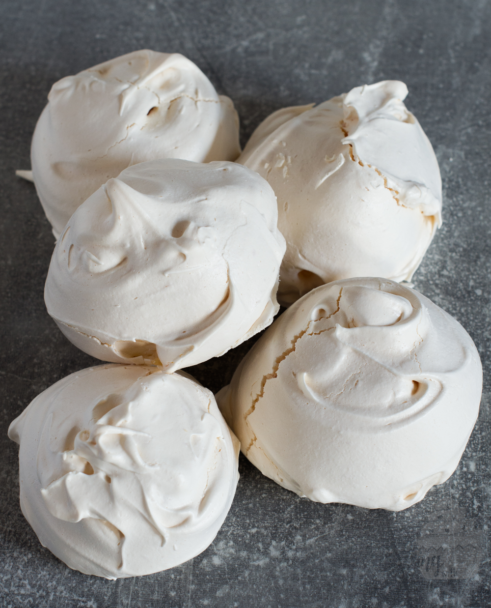

Brownie Recipe
A tasty and easy-to-grasp meringue recipe for absolute bakers!

Ingredients
- 5 Egg whites
- 100g Icing sugar
- 115g Caster sugar
Method:
- Heat the oven to 110C and line 2 baking sheets with parchment/greaseproof paper.
- whisk all the egg white until peaks form. Slowly add in sugar,one spoon at a time.
- Make sure to not overmix. Then, pour contents of fist-sized mixture onto baking sheets.
- bake in your preheatedoven for 80-100 minutes.
- Leave to cool. When cooled, enjoy!
Return to homepage